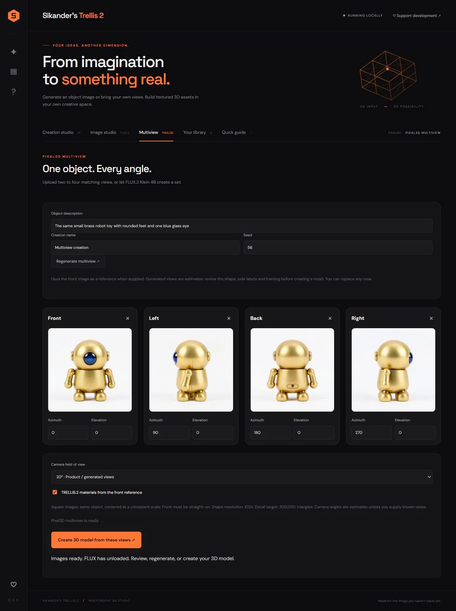

Start with a reference
Bring an image into the creation studio, or review a set of object views in the multiview workspace.
A local studio for turning images into 3D assets.
Explore the story
Bring a complex image-to-3D pipeline into a clear desktop workflow, with room to inspect and refine the result.
The studio organizes image input, generation controls, geometry review and export in one workspace. A newer multiview interface adds front, left, back and right references, with adjustable view angles. The screenshots show both the creation workspace and this multiview extension, alongside an earlier interface view.
The input and generated model sit side by side, keeping the relationship between reference and result visible. Generation controls are grouped into a step-by-step panel; preview, export and saved-work features support the stages that follow.
Bring an image into the creation studio, or review a set of object views in the multiview workspace.
A large interactive preview sits alongside generation controls, with repair and review tools documented as part of the local workflow.
Export controls and a saved library keep the result available for further inspection and use.
Explore the complete compositions and interface states. Select any image for a closer look.
03 / PROJECT IMAGES
Select a view to explore.
The creation workspace brings the input image, generation controls, 3D result and export options together.
The multiview workspace presents front, left, back and right references alongside view-angle controls before reconstruction.

An earlier prepared view of the local image-to-3D workflow.
Structure, interaction and visual decisions that give the work its character.
RoleProduct interface, local pipeline integration, packaging and workflow design; confirm personal responsibility across the application.
AssetsTRELLIS.2, Pixal3D, FLUX, Blender, model-viewer and other upstream tools retain separate credit. Demonstration images and generated meshes are not claims of original hand-modeled geometry. The first two images are complete documentation screenshots; the third is an earlier prepared interface view. Personal contributions and assisted implementation remain documented separately.
StatusDocumented local studio. The source includes a multiview preview workflow; no generation run, performance benchmark or hardware validation was performed for this portfolio pass.